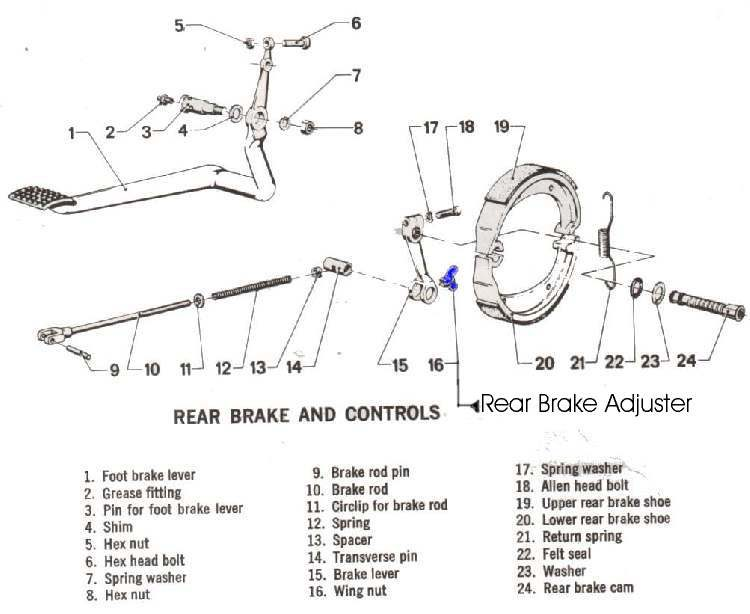

The brake does not fully let go after you release the lever or pedal. The bike feels slow or held back, uses more fuel, and the disc or drum is hot after a short ride. A dragging brake overheats the fluid and pads, which leads to fade, and it can get worse until the wheel locks.
Is it safe to ride?
No. Heat builds up and can boil the fluid or lock the wheel. Find the cause first.
Quick checks first
- After a short ride, hold the back of your hand near each disc or drum (do not touch). Is one much hotter?
- Put the bike on its stand and spin each wheel. Does one stop quickly?
- Does the lever or pedal return fully and have free play?
- Is the rear chain very tight?
- Feel the drum or hub after a ride. If it is very hot and the brake was hardly used, it is dragging. If the brake is not dragging and the hub is still hot, check the wheel bearings: Wheel hub or brake drum is very hot after riding.
- A master cylinder plunger or caliper piston gummed up by water in the fluid can leave a disc brake on.
Diagnose it step by step
1Which wheel drags? Spin each with the bike on its stand.
- Neither, but the bike feels slow: check tyre pressure and chain, and see Bike feels held back, as if something is dragging.
- One or both drag: go to step 2.
2Rear wheel on a chain bike: is the chain too tight?
- Yes: set it with Check and adjust chain slack (K-Light 125: 20 to 40 mm), then spin again.
- No: go to step 3.
3Does the lever or pedal have free play and return fully on its own?
- No: the lever pivot, pedal pivot or cable is sticking, or the rear pushrod is too long. See Service brake and clutch lever pivots, Adjust the rear brake pedal and Lubricate control cables.
- Yes: go to step 4.
4Is it a drum brake?
- Yes: back off the adjuster. If the drag stops, re-adjust with Adjust a drum brake. If not, the cam or springs are at fault: Service a drum brake.
- No: go to step 5.
5Disc brake: open the bleed nipple briefly (tube fitted). Does the wheel spin free?
- Yes: pressure was trapped by the master cylinder or a CBS unit. Go to Check the brake master cylinder, and on a CBS bike Check a combined braking system (CBS). Top up and bleed afterwards.
- No: the caliper pistons or slides are sticking. Go to Brake caliper sticks or is seized.
6Is the drag still there with the caliper removed (disc brake) or the brake fully backed off (drum)?
- Yes: it is not the brake. Check wheel bearings with Check wheel bearings and look for a missing axle spacer.
The full procedure is in Check for brake drag.
Causes, most likely first
| Cause | How to confirm | Fix |
|---|---|---|
| Sticking caliper piston or slide | Drag stays after opening bleed nipple | Clean a brake caliper and free the pistons |
| Chain too tight (rear) | Little slack; tight spots | Check and adjust chain slack |
| Drum over-adjusted or cam sticking | Drag stops when adjuster backed off | Adjust a drum brake |
| Lever, pedal or cable not returning | No free play; slow return | Service brake and clutch lever pivots |
| Rear pushrod too long, or CBS holding | Drag cured by opening nipple; CBS bike | Adjust the rear brake pedal |
| Master cylinder not returning | Nipple test frees wheel | Check the brake master cylinder |
| Wheel bearing or missing spacer | Drag with brake removed | Check wheel bearings |
Reference values (K-Light 125)
| Item | Value | Source |
|---|---|---|
| Rear pedal free play | 20 to 30 mm | K-Light 125 manual, PDF p. 62 |
| Rear pushrod clearance | 0 to 0.2 mm, piston free | K-Light 125 manual, PDF p. 116 |
| Chain slack | 20 to 40 mm, bike upright | K-Light 125 manual, PDF p. 61 |